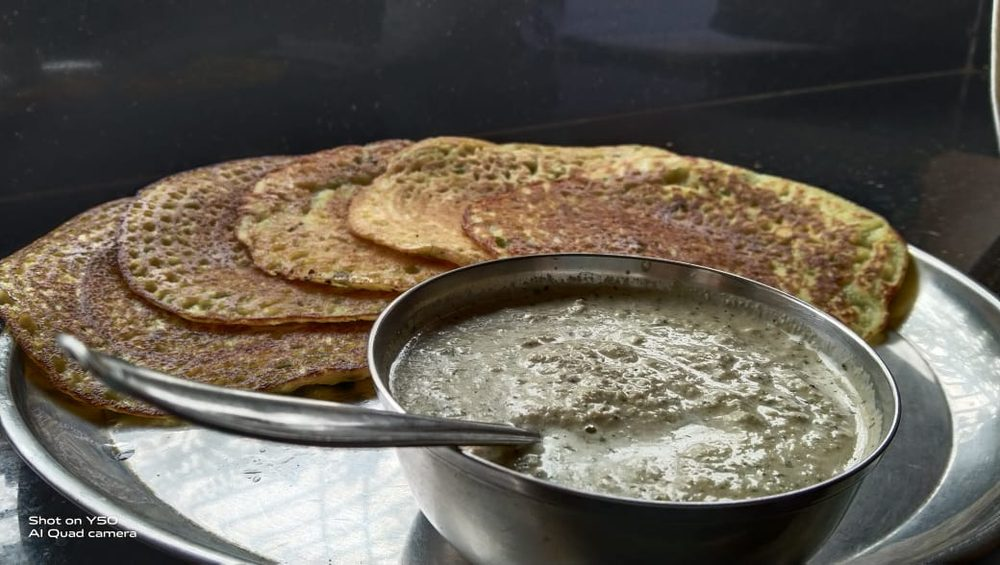

Prep15 min
Cook30 min
Total45 min
Serves4
Difficultymoderate
Contains: gluten
Ingredients
Quantities for 4.
- 1/2 cup, fine Rava
- 1 cup Rice Flour
- 1/4 cup Maidagives the lace its strength
- 1 tsp Cumin Seeds
- 1 tsp, coarsely crushed Black Pepper
- 2, finely minced Green Chilli
- 1 tsp, minced Ginger
- 1 sprig, finely chopped Curry Leaves
- 3 tbsp, chopped Coriander Leavesoptional
- 1 small, very finely chopped Onionoptional
- 4 cups Water
- 6 tbsp Neutral Oil
- to taste Salt
Cookware
tawa, stovetop
Before you start
- Rest the batter 30 minutes so the rava swells; a fresh batter thickens on you halfway through cooking.
- The batter must be as thin as milk — thinner than seems sensible. That is what makes the holes.
- Stir the batter from the bottom before every single dosa; the flours settle within a minute.
Method
- Whisk the rava, rice flour, maida and salt with 2 cups of water until completely lump-free.
- Stir in the cumin, pepper, chilli, ginger, curry leaves, coriander and onion.
- Add the remaining 2 cups of water and rest the batter 30 minutes.
- Check the consistency — it should run off the ladle in a thin stream like full-cream milk.If it coats the ladle at all, add more water. Thick batter gives a pancake, not lace.
- Heat the tawa until quite hot, then lower the heat to medium — a drop of water should vanish instantly.
- Pour the batter from a height in a ring around the outside, then fill the gaps with a few splashes.Pour, never spread. A spatula destroys the holes as they form.
- Drizzle a teaspoon of oil around the edge and over the middle.
- Cook undisturbed 2 to 3 minutes until the edges lift by themselves and the surface is dry and golden.Trying to move it early is how rava dosas tear.
- Flip and cook 45 seconds, or fold straight out of the pan if you like it very crisp.
- Wipe the tawa with half an onion between dosas and stir the batter before each pour.
Storage
The batter keeps 2 days refrigerated; re-thin with water before use. Cooked dosas do not keep — eat them as they come off the pan.
Nutrition Good estimate
| Per serving148 g | Per 100 g | |
|---|---|---|
| Calories | 456 kcal | 309 kcal |
| Protein | 7.2 g | 4.8 g |
| Carbohydrate | 58.6 g | 39.6 g |
| of which sugars | 2.1 g | 1.5 g |
| Fibre | 3.5 g | 2.4 g |
| Fat | 21.7 g | 14.7 g |
| of which saturated | 2.3 g | 1.6 g |
| of which unsaturated | 18.2 g | 12.3 g |
Worked out from the listed quantities; most of the ingredient list could be weighed. Some ingredients have no exact match in the nutrient database and use the nearest equivalent: curry leaves. Estimated from raw ingredients using USDA FoodData Central. Cooking changes are not modelled, and added salt is excluded, so sodium is not given.
Recipe v1.0.0, last updated 2026-07-31. Curated for Khaana and kept under version control.